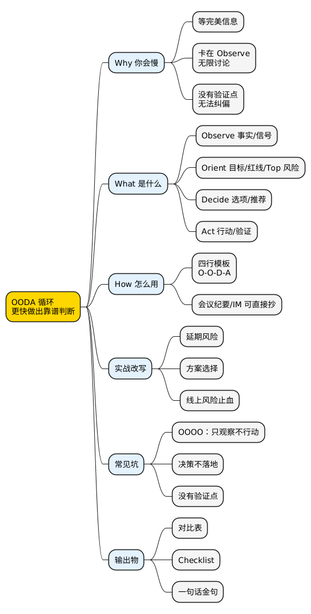

职场工具箱之 OODA 循环：高手为什么总能比你更快做出靠谱判断？
Posted on Fri 27 February 2026 in Method • 3 min read
| Abstract | 职场工具箱之 OODA 循环：高手为什么总能比你更快做出靠谱判断？ |
|---|---|
| Authors | Walter Fan |
| Category | Journal |
| Version | v1.0 |
| Updated | 2026-02-27 |
| License | CC-BY-NC-ND 4.0 |
简短大纲
展开看看
- 你以为你在“谨慎”，其实你在“卡死”：为什么你总比别人慢半拍 - OODA 是什么：不是四个单词，是一个循环 - 会议上怎么用：把 OODA 写成一句话模板（你能直接抄） - 三个场景改写：延期/选方案/线上风险 - 常见坑：把 OODA 做成 OOOO（只 Observe，只讨论，不行动） - 收尾：核心概念表 + Checklist + 金句 + 系列回顾 + 思维导图1. 先问一个扎心的问题：你是在做判断，还是在“等一个完美信息”？
这场景你八成见过。
需求评审会上，大家讨论得热火朝天：有人关心性能，有人关心安全，有人担心排期，有人纠结“方案优雅不优雅”。
你也很认真，甚至把每个问题都记了下来。
但会开完，决策没有。讨论像把线程挂起了，谁也不敢 resume()。
小白提示：
resume()是编程术语，意思是"恢复执行"。这里比喻讨论被暂停了，谁也不敢接着往下推。
两天后，leader 轻描淡写一句：“先按方案 B 推吧，边做边看。”
你心里会冒出两个声音：
- “他怎么这么草率？”
- “我是不是还不够严谨？”
我后来才明白：高手不一定信息更多，但他的"决策-行动"循环转得更快。
他不是不谨慎，他是在用一套机制把不确定性“压缩”，先做一小步，用行动换回新信息，再调整方向。就像开车过陌生路口，你不可能停在那里等把所有路况都摸清，得先慢慢开出去，看到情况再调方向盘。
这个机制，就是 OODA。
2. What：OODA 到底是什么？
OODA 出自美国空军战斗机飞行员 John Boyd（约翰·博伊德）的决策理论。他发现：空战中活下来的飞行员，不一定飞得最快，但一定是"判断-反应"循环转得最快的那个。后来这套理论被广泛用到商业、管理和工程领域。四个字母分别是：
- O — Observe（观察）：收集事实、信号、约束——先搞清楚"发生了什么"
- O — Orient（定向）：建立判断框架——"我们的目标是什么、风险在哪、优先级怎么排"
- D — Decide（决策）：给出取舍与选择（不是“继续讨论”）
- A — Act（行动）：动手去做，验证假设，获得新信息
注意：它不是“流程图”，是“循环”。
你做一次就结束，那叫 checklist（清单）；你做很多圈、每圈都比上一圈更准，那才叫 OODA。就像你骑自行车：眼睛看路（Observe）→ 判断方向（Orient）→ 决定左拐还是直行（Decide）→ 转动车把（Act）→ 再看路……循环不停。
2.1 我给 OODA 的人话翻译
我更喜欢这么讲：
先把事实说清楚（O），再把判断标准说清楚（O），然后给出选项并拍板（D），最后用行动去验证（A）。
这句话你放进会议纪要里，就够用了。
3. Why：为什么高手总能更快做出靠谱判断？
因为他做了三件你没做的事：
3.1 他把“定向”做得很明确
很多人卡在“观察”：信息越多越安心。
但 OODA 里最值钱的，恰恰是第二个 O：Orient（定向）。
就像我一直在倡导的“度量驱动开发（metrics-driven development）”：没有调查就没有发言权。你可以不喜欢某个数据，但你不能绕开数据就下结论。数据当然可能有误，但它一般不会“说谎”——除非你采错了、改错了、口径没对齐，或者你只挑对自己有利的那一段。
放到 OODA 里：
- Observe：就是调查取证，别凭感觉
- Orient：就是统一口径：目标/红线/风险排序是什么
简单说，定向就是在动手之前先回答三个问题：
- 我们这次决策的目标是什么？（速度/成本/风险/体验，哪个排第一）
- 哪些风险是必须兜底的？哪些可以接受？（也就是"红线"在哪）
- 我们现在最缺哪一条信息？用什么行动能最快拿到？
打个比方：你在十字路口迷路了。Observe 是看路牌和导航，Orient 是确认"我要去火车站，不是机场"——方向搞错了，跑得再快也没用。
3.2 他不追求“完美决策”，追求“可纠偏决策”
职场里很多决策没有标准答案。
你能做的不是“保证永远正确”，而是保证：
- 错了能发现
- 发现了能纠偏
- 纠偏代价不至于炸锅
这就是为什么 OODA 必须有 A：行动是你最快的传感器。
3.3 他在用行动“逼出信息”
有些信息不是讨论出来的，是跑出来的、灰度出来的、日志里抓出来的、用户反馈里听出来的。
小白提示：灰度发布 就是先让一小部分用户（比如 5%）用新功能，观察有没有问题，没问题再全量放开。就像新菜先让几个朋友试吃，觉得 OK 再上菜单。
讨论再久，也不会让未知变成已知。
4. How：会议上怎么用 OODA？给你一条能直接抄的模板
我把 OODA 压成了一个“职场版速记模板”，你可以直接复制到 IM（即时通讯，如飞书/钉钉/Slack）或会议纪要里：
[Observe] 事实：<现在发生了什么>（证据/数据/日志/反馈）
[Orient] 目标与约束：<优先级>；不可触碰：<红线>；最大风险：<Top 1>
[Decide] 选项：A / B / C（含“不做/延期”）；我建议选 <X>，原因 <1-2 条>
[Act] 下一步：<谁> 在 <什么时候> 做 <什么>；验证点：<用什么信号判断对错>
你把这四行写完，讨论通常就会收敛：该补信息的补信息，该拍板的拍板。
5. 一张对比表：你“很认真”，但你赢不过 OODA
| 低效讨论（常见） | OODA 方式（更容易收敛） |
|---|---|
| 信息越多越安全，先把所有问题讨论完 | 先定向：目标/红线/Top 风险是什么 |
| “我们再看看”“再对齐一下” | 先给选项 + 推荐 + 验证点 |
| 方案永远在 PPT 里优雅 | 先行动拿信号：跑通一个最小版本/灰度/实验 |
| 决策=领导拍板 | 决策=团队给出可纠偏的选择 |
6. 三个场景：把你的话改写成 OODA（以 GitLab 项目为例）
为了让例子更具体，我们假设你在一个类似 GitLab（开源代码托管平台）的项目组里工作——它有 CI/CD 流水线、Web 页面、用户登录系统，三个场景刚好都能对上。
小白提示：GitLab 是一个非常知名的开源代码管理平台，类似 GitHub，很多公司用它来托管代码、跑自动化测试和部署。下面的场景即使你没用过 GitLab，也能看懂——关注 OODA 的思路就好。
下面每个场景都给你一个“可抄作业版本”。
场景 1：延期风险——Pipeline 模块被 Registry API 拖住了
背景：你负责 GitLab 的 CI/CD Pipeline 模块，它依赖 Container Registry（镜像仓库）提供的 API。最近 Registry 那边频繁改接口，你这边联调一直不通。
❌ 原版（领导内心 OS：你来报丧，我来背锅）
“Registry 那边接口不稳定，Pipeline 功能要延期。”
✅ OODA 版（四行说清楚）
[Observe] Container Registry API 本周变更了 3 次，Pipeline 回归测试连续失败；目前阻塞在镜像推送流程，影响 Artifact 上传功能联调。
[Orient] 这次目标优先级是“按期上线 > 体验完美”；红线是“不能引入线上事故”。Top 风险是“上线当天接口再变”。
[Decide] 选项：A 延期 1 周等 Registry 稳定；B 先降级上线——Pipeline 核心链路走本地缓存兜底 + 灰度 5% 项目；C 砍掉 Artifact 上传功能按期上。我建议选 B，保住按期发版且风险可控。
[Act] 我今天把降级方案做出来，灰度给 GitLab.com 上 5% 的项目；同时约 Registry 团队把 API 协议冻结到周三。验证点：灰度 24 小时 Pipeline 失败率 < 0.1%、回归全绿。
场景 2：方案选择——Merge Request 列表页太慢了
背景：GitLab 的 Merge Request（合并请求，类似 GitHub 的 Pull Request）列表页在大项目上加载很慢，用户抱怨越来越多。经过排查，瓶颈在数据库查询上。
❌ 原版
“MR 列表页太慢了，加 Redis 还是本地缓存？”
✅ OODA 版
[Observe] MR 列表页 P95（95% 请求的响应时间）达到 800ms，瓶颈在 DB 查询；下周 GitLab.com 有大型开源活动，预计访问量翻倍。
[Orient] 目标优先级：稳定性 > 性能 > 成本；红线：不能引入跨区单点。Top 风险：活动当天抖动。
[Decide] 选项：A 本地缓存（快，但多实例间数据不一致）；B Redis 集群缓存（稳定，但需要运维配合部署）；C 先做 DB 读写分离（效果好但周期长）。我建议选 B，活动前一周落地最现实。
[Act] 我负责加降级开关（缓存挂了能自动回退到查 DB）和熔断；@运维同学 帮我协调 Redis 集群资源和 Grafana 监控面板。验证点：压测 MR 列表页 P95 < 300ms，缓存未命中时 DB 查询不超过当前基线。
场景 3：线上风险——OAuth 登录可能被绕过
背景：安全团队在 code review 时发现 GitLab 的 OAuth 第三方登录链路有一个潜在漏洞——在特定条件下可以绕过 token 校验。目前没发现有人利用，但窗口期越长风险越大。
小白提示：OAuth 是一种让你用 Google/GitHub 账号登录其他网站的标准协议。WAF（Web Application Firewall）是放在网站前面的 “防火墙”，能自动拦截恶意请求。
❌ 原版
“OAuth 登录那边可能有安全风险。”
✅ OODA 版
[Observe] OAuth 登录链路发现潜在漏洞：当 redirect_uri 参数包含特定编码时可绕过 token 校验（当前未见线上利用，但 GitLab.com 日均 OAuth 登录 50 万次，窗口期越长越危险）。
[Orient] 目标优先级：先止血 > 再根治；红线：不能让攻击窗口扩大。Top 风险：被外部扫描命中。
[Decide] 选项：A 本周修复（影响 MR 审批流程的排期）；B 先加 WAF 规则拦截异常 redirect_uri + 限流止血（半天可上线），下周出根治补丁；C 暂不处理（不可接受）。我建议选 B，先把攻击窗口堵上。
[Act] 我今天加 WAF 规则并补 Datadog 异常登录告警；明天出 OAuth 校验修复方案的设计文档。验证点：WAF 拦截命中率、异常登录告警数、修复后 OAuth 回归用例全过。
7. 技术人最容易踩的坑：把 OODA 做成 OOOO
我见过不少“看起来很忙”的讨论，最后长这样：
- Observe：收集一堆信息
- Observe：继续收集信息
- Observe：再开一个对齐会
- Observe：……
说好听点叫谨慎，说难听点叫拖延。
OODA 里最容易被你跳过的，是两个环节：
- Orient：没有定向，信息只会越来越多，结论越来越少
- Act：没有行动，你永远拿不到新信号，也就永远无法纠偏
8. 总结：一句话把 OODA 记住
OODA 的精髓不是“懂四个词”，而是“把循环转起来，用行动换信息”。
行动清单（30 秒自检）
- [ ] 我有没有把事实和证据说清楚？（Observe）
- [ ] 我有没有说清目标优先级、红线、Top 风险？（Orient）
- [ ] 我有没有给至少两个选项 + 一个推荐？（Decide）
- [ ] 我有没有给“谁/何时/做什么”的下一步和验证点？（Act）
- [ ] 这次讨论的结论能不能在下一圈被验证/纠偏？
思维导图
@startmindmap
<style>
mindmapDiagram {
node { BackgroundColor #FAFAFA }
:depth(0) { BackgroundColor #FFD700 }
:depth(1) { BackgroundColor #E3F2FD }
:depth(2) { BackgroundColor #F5F5F5 }
}
</style>
* OODA 循环\n更快做出靠谱判断
** Why 你会慢
*** 等完美信息
*** 卡在 Observe\n无限讨论
*** 没有验证点\n无法纠偏
** What 是什么
*** Observe 调查取证\n事实/信号/数据
*** Orient 统一口径\n目标/红线/Top 风险
*** Decide 选项/推荐
*** Act 行动/验证
** How 怎么用
*** 四行模板\nO-O-D-A
*** 会议纪要/IM 可直接抄
** 实战改写（GitLab 为例）
*** Pipeline 延期风险
*** MR 列表页性能选型
*** OAuth 登录安全止血
** 常见坑
*** OOOO：只观察不行动
*** 决策不落地
*** 没有验证点
** 输出物
*** 对比表
*** Checklist
*** 一句话金句
@endmindmap

系列回顾
RACI：分工别靠吼MVP：小步起跑ABC 情绪理论：把 KPI 从“审判书”改成“导航图”向上管理：不是拍马屁，是帮领导做决策更容易
扩展阅读
本作品采用知识共享署名-非商业性使用-禁止演绎 4.0 国际许可协议进行许可。